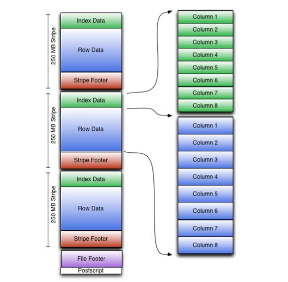

orcfile
Table of Contents
1. ORC文件格式分析
http://docs.hortonworks.com/HDPDocuments/HDP2/HDP-2.0.0.2/ds_Hive/orcfile.html
Compared with RCFile format, for example, ORC file format has many advantages such as:
- a single file as the output of each task, which reduces the NameNode's load
- Hive type support including datetime, decimal, and the complex types (struct, list, map, and union)（复杂数据类型）
- light-weight indexes stored within the file
- skip row groups that don't pass predicate filtering
- seek to a given row
- block-mode compression based on data type
- run-length encoding for integer columns（RLE针对整数压缩效果更好）
- dictionary encoding for string columns
- concurrent reads of the same file using separate RecordReaders
- ability to split files without scanning for markers（不使用同步标记）
- bound the amount of memory needed for reading or writing
- metadata stored using Protocol Buffers, which allows addition and removal of fields
An ORC file contains groups of row data called stripes, along with auxiliary information in a file footer.
- At the end of the file a postscript holds compression parameters and the size of the compressed footer.
- The default stripe size is 250 MB. Large stripe sizes enable large, efficient reads from HDFS.
- The file footer contains a list of stripes in the file, the number of rows per stripe, and each column's data type. It also contains column-level aggregates count, min, max, and sum.

As shown in the diagram, each stripe in an ORC file holds index data, row data, and a stripe footer.
- The stripe footer contains a directory of stream locations. Row data is used in table scans. (和 RCFile 相比row-data这个部分应该类似)
- Index data includes min and max values for each column and the row positions within each column (A bit field or bloom filter could also be included.) Row index entries provide offsets that enable seeking to the right compression block and byte within a decompressed block. (和 RCFile 相比，index-data应该对应的是meta-data部分。index-data包括了概要信息以及bloom filter可以用来skip整个stripe. index-data的row-position是基于compression block偏移，所以不用像rcfile一样需要解压整个column, 这样读取量会减少不少)
- Having relatively frequent row index entries enables row-skipping within a stripe for rapid reads, despite large stripe sizes. By default every 10,000 rows can be skipped.
- With the ability to skip large sets of rows based on filter predicates, you can sort a table on its secondary keys to achieve a big reduction in execution time. For example, if the primary partition is transaction date, the table can be sorted on state, zip code, and last name. Then looking for records in one state will skip the records of all other states.(可以选择性地针对column做排序)
2. ORC文件尺寸分析
这个是分析tpch_100g_zlib.lineitem表看到的
Let's take a ORC file from lineitem table(TPCH-100G compressed in zlib) for example.
java -jar ~/installed/orc-tools-1.7.0-SNAPSHOT-uber.jar meta hdfs://172.26.194.238:9000/user/hive/warehouse/tpch_100g_zlib.db/lineitem/000000_0`
The `File Footer` section takes 700-800 bytes. We discussed if we can cache this data section to save latency/throughput, but it looks like meaingless now. Because usually a ORC file is splitted to 3-4 parts, and read by 3-4 `HDFSScanNode` instances. Even we can cache this data section, we just save 3-4 reads(and about 3000 bytes).
And this ORC file has 10 stripes, one stripe information is following:
Stripe: offset: 304806283 data: 24542859 rows: 827152 tail: 267 index: 19678
`tail` stands for size of `Stripe Footer`, it's 267 bytes.
`index` stands for size of `Index Data`, it's 19678 bytes.
针对index data通常不是太大的情况，我在实现ORC文件延迟物化的时候，尽可能地一次读取整个index data部分，而不是按照column分别读取每个index data.
3. ORC读取优化代码
延迟物化:
- Implement ORC late materialization mechanism by dirtysalt · Pull Request #3419 · StarRocks/starrocks https://github.com/StarRocks/starrocks/pull/3419
- Implement ORC late materialization by dirtysalt · Pull Request #3479 · StarRocks/starrocks https://github.com/StarRocks/starrocks/pull/3479
- optimize ORC late materialization by dirtysalt · Pull Request #3657 · StarRocks/starrocks https://github.com/StarRocks/starrocks/pull/3657
其他优化：
- 202106 有效地进行bit-unpacking
- 优化小文件读取 Optimize small read on ORC(small row group index/stripe/file) by dirtysalt · Pull Request #3962 · StarRocks/starrocks https://github.com/StarRocks/starrocks/pull/3962